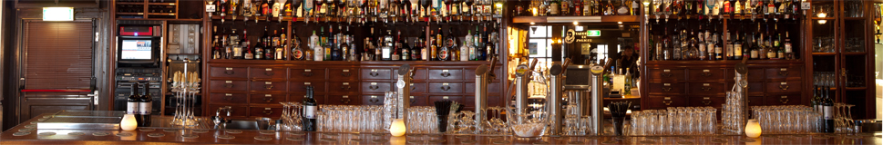
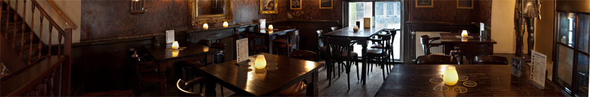
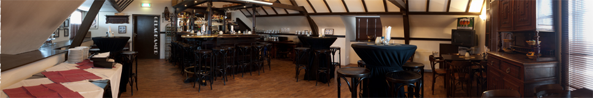

Streek- en kerstmarkt
Plein Oude Dorp
Sinds 2002 aan het Plein in het Oude Dorp van Houten. Zes bieren van de tap, ruim vijftig uit de fles en elke dag behalve maandag lunch en diner.
Trots lid van het Hertog Jan Genootschap. Twee vaste kranen en een wisseltap die met het seizoen meegaat. Uit de fles kies je uit ruim vijftig bieren.
Nu verkrijgbaar: Hertog Jan Vatgerijpt 2023, 2024 en 2025, en Grand Prestige 2020 in de 75 cl fles.
Vraag aan de bar wat er op dit moment beschikbaar is.
Van de bar beneden tot de gelagkamer boven. Schuif door de ruimtes heen.



De keuken is zes dagen per week open van 12.00 tot 21.00 uur. De kaart wisselt twee keer per jaar, en er staan regelmatig gerechten buiten de kaart om.
Nieuwe kaart vanaf 6 oktober 2026. Vegetarisch eten? Vraag ook naar de allergenenkaart.
Lunch van 12.00 tot 17.30 uur, of in overleg
Bij de lunchgerechten kies je tussen wit of bruin boerenbrood.
Onze clubsandwiches worden geserveerd met chips.
Diner van 12.00 tot 21.00 uur
Geserveerd met verse friet, mayonaise en op verzoek een salade.
Met brood of verse friet en croutons. Ook als halve portie.
Voor de kinderen.
Het toetje.
Voor 2 tot 3 personen, te bestellen tot 21.00 uur.
Op vrijdag en zaterdag bestel je onze favoriete gerechten om mee te nemen.
Afhalen 16.00 – 18.30 uurBel 030 636 97 19
Ruim vijftig bieren uit de fles, zes van de tap, een goed glas wijn en een volle achterbar.
Elk jaar rijpt de Grand Prestige op andere houten vaten: de Vatgerijpt-editie, in kleine oplage. Vraag naar de nieuwste editie.
Gebrouwen door het Houtens Brouw Collectief, sinds 2013, met producten uit de streek.
Abdijbier, met een receptuur die teruggaat tot de abdij van Leffe.
Sinds 2016 zijn we lid van het Genootschap: een selectie van 27 cafés door heel Nederland die aan de hoogste Hertog Jan-normen voldoen. Nieuwe speciaalbieren en evenementen van Hertog Jan komen hier als eerste.
Elk kwartaal brouwen de brouwers van Hertog Jan een nieuw Proeftuinbier, alleen verkrijgbaar bij leden van het Genootschap. Op is op: vraag welke er nu zijn.
Hertog Jan begon in 1915 in Arcen, toen vier bevriende brouwers stoombierbrouwerij “De Vriendschap” oprichtten. De naam verwijst naar Jan Primus, hertog van Brabant in de 13e eeuw.
Pils is altijd bier, maar bier is niet altijd pils. Speciaalbier is bovengistend, pils ondergistend. En een trappist is een abdijbier, maar niet elk abdijbier is een trappist.
Bier buiten de kaart om? Vraag de bediening.
Nieuwe huiswijnen en nieuwe wijnen op de kaart. Buiten de kaart om regelmatig wisselende wijnen per glas of fles: vraag de bediening.
Een volledig aparte ruimte op de eerste verdieping, met een eigen bar en bediening. Voor besloten feestjes, recepties, presentaties en vergaderingen.
40personen voor een borrel of feest
De Zwijger ligt midden in het Oude Dorp. Dit staat er de komende tijd op de agenda.
Plein Oude Dorp
Eerste en tweede kerstdag gesloten.
Kom naar het Plein Oude Dorp.
Plein Oude Dorp
Plein Oude Dorp
Elke maand op het Plein.
Oude Dorp, Houten
| Maandag | Gesloten |
| Dinsdag | 11.00 – 23.00 |
| Woensdag | 11.00 – 23.00 |
| Donderdag | 11.00 – 00.00 |
| Vrijdag | 11.00 – 00.00 |
| Zaterdag | 11.00 – 00.00 |
| Zondag | 11.00 – 22.00 |
| Lunch en diner | 12.00 – 21.00 |
Maandag gesloten. Reserveren voor lunch, borrel en diner: bel 030 636 97 19. Binnen reserveren kan telefonisch. Op het terras reserveren we niet. Spontaan langskomen kan natuurlijk ook, dan kijken we of er plek is.
Houten ligt aan de A27 (Breda – Hilversum). Vanuit het westen, oosten en noorden is Houten de eerste afslag van de A27.
Vanuit Den Haag (A12): richting Houten A27 Utrecht-Oost, Nieuwegein. Rij de eerste afslag Houten (Utrecht-Oost, Nieuwegein) voorbij, houd richting Breda aan en neem de afslag Houten.
Vanuit Amersfoort (A28) en Arnhem (A12): houd richting Breda aan en neem de afslag Houten.
Vanuit Amsterdam (A2): bij Oudenrijn richting Arnhem, daarna richting Utrecht-Oost, Nieuwegein, Houten (A27). Rij de eerste afslag Houten (Utrecht-Oost, Nieuwegein) voorbij, houd richting Breda aan en neem de afslag Houten.
Na de afslag Houten: einde afrit links richting Houten. Bij de T-splitsing met stoplichten rechtsaf de rondweg op, richting Oude Dorp. Bij de tweede stoplichten linksaf, afslag Oude Dorp (Dorpstraat). Dan de tweede weg links (Loerikseweg). Je rijdt naar het plein; de Zwijger ligt aan je rechterhand.